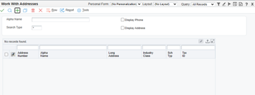
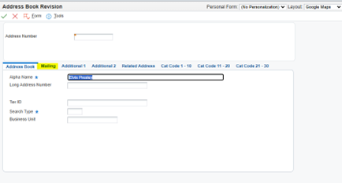
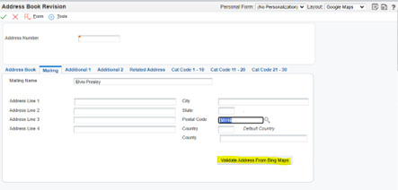
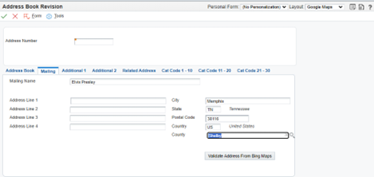
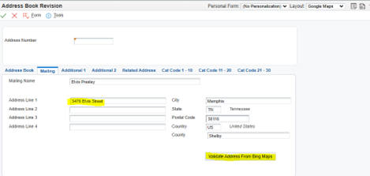
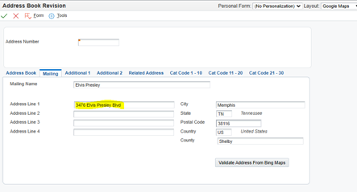
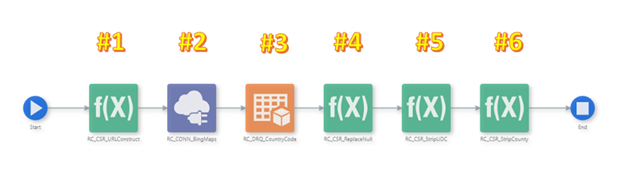
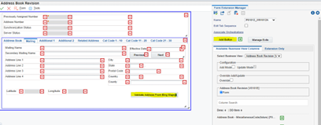

The following is a simple orchestration for the JD Edwards Address Book to look up and/or verify a partially entered street address.
Before we delve into the details behind the lookup function, let's look at how the end user can make use of it during day-to-day activities. Our example starts with the addition of an address book record for which we have limited and possibly inaccurate information:
From Work With Addresses click Add (i.e., “+” button)
Enter the Alpha Name, click on the mailing tab
In the Mailing Address screen, let’s assume you know the zip code of the person whom you have entered, but not much else. In that case, enter the zip code and hit the “Validate Address From Bing Maps” button:
You should see the city, state and county populated:
Now, we need to get the street address but we’re not 100% sure of the spelling, nomenclature, etc. For example, the full street address for this address book record is:
That’s a relatively complicated street address. If the information I am given is partial and/or not entirely accurate, like “Elvis Street”, I may need help filling it out:
After entering the partial and somewhat inaccurate data we have been given we can hit the “Validate Address From Bing Maps” button. The street address should then default in based on mapping service data:
You should now have a populated address for the record that has been validated via a standard mapping service. To assist in further validation, you may also use a direct mapping function via CAFE1 functionality. Please see our other topic on this feature.
To establish the lookup function you will first need to set up a REST connection to a mapping service. We chose Bing Maps, for various reasons, but this should work with any of the major mapping services. You will likely need to subscribe to the service and receive a key to be used when requesting address data. The service is called via a URL that is constructed from elements taken from the address book screen.
For Bing Maps, the URL is constructed as follows:
Not every field shown in the URL above is required. A simplified request can be sent with only the few fields from the address book:
Each mapping service will have its own format to retrieve address data.
The orchestration used to provide this functionality within the JDE application consists of several elements:
#1 - Custom Service Request – Constructs a URL from data entered entered on the JDE address book screen to feed the mapping service
#2 - Data Connection – Sends formatted URL data to the mapping service (as shown above) and returns formatted data
#3 - Data Request – To return the country code from JDE UDC 00/CN based on the country description returned by the mapping service
#4 - Custom Service Request – Replaces nulls returned by the mapping service with spaces to prevent errors when populating JDE
#5 - Custom Service Request – Removes leading spaces from the country code in anticipation of populating the country field
#6 - Custom Service Request – Removes the word “county” from the county returned by the mapping service
Create a Form Extension, add a button and associate the orchestration with the button:
Your Address Book lookup function should now be ready to use
In this exercise we showed how useful a simple lookup function can be that makes use of an Orchestration with several elements called from a Form Extension - all of them User Defined Objects (UDOs) that don't require development resources or modifications to base JDE code. All elements should survive future application and tools release upgrades with little to no retrofit. If you have any questions/comments on this or similar functions, please use our Contact Us feature.
Back to Home